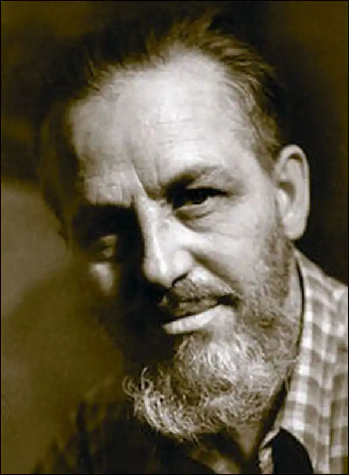
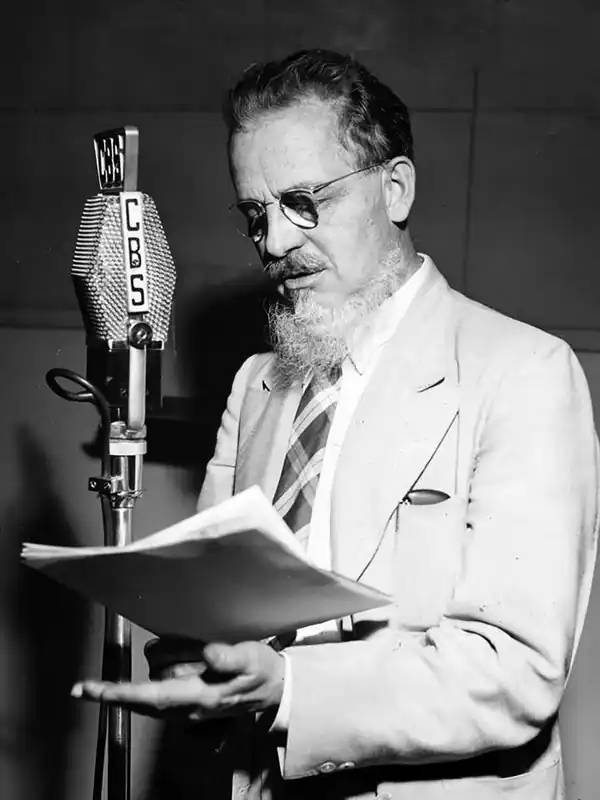

Рекс Тодгантер Стаут (англ. Rex Todhunter Stout; 1 грудня 1886, Ноблесвілль — 27 жовтня 1975) — американський письменник, автор детективних романів, творець циклу романів про Ніро Вульфа.
Рекс Стаут народився у місті Ноблесвілль, штат Індіана 1 січня 1886 р. Його батьки Джон Уоллес Стаут та Люсетта Елізабет Тодхантер Стаут були квакерами. Незабаром після народження Рекса Стаута їх родина переїхала до Канзасу.
У чотирирічному віці Стаут двічі прочитав Біблію, а у тринадцять років став чемпіоном штату з правопису. Стаут навчався у вищій школі Топеки, штат Канзас. Навчався у Канзаському університеті, але так його й не закінчив. У період з 1906 по 1908 Стаут служив у військово-морських силах США (юнгою на яхті президента США Теодора Рузвельта). У 1916 році Стаут одружився на Фей Кеннеді, з якої розійшовся в 1932 році. 21 грудня 1932 року Рекс Стаут вдруге одружився з відомою американською дизайнеркою Полою Гофман. Цивільна церемонія пройшла в його будинку, Хай Мідоув (англ. High Meadow). Займався журналістикою. Рекс Стаут створив асоціацію з фінансування шкіл, яка допомогла навчанню приблизно двох мільйонів дітей. Як голова цієї доброчинної організації відправився у тривалу подорож до Європи. Десять років віддав готельному бізнесу — від рядового працівника до керуючого готелем. Майже усе життя займався суспільною діяльністю у галузі літератури та культури. У 1958 р. був президентом американської асоціації письменників детективного жанру. Стаут був одним з багатьох письменників у переліку особистих ворогів голови ФБР — Едґара Ґувера, що знайшов журналіст Ґерберт Мітґанґ для своєї книжки "Небезпечні досьє", 1988. Досьє на Стаута у ФБР налічувало близько 300 сторінок. У 1965 році Стаут написав роман "Дзвінок у двері" ("The Doorbell Rang"), у якому Ніро Вульф перемагає у сутичці з ФБР. Літературна кар'єра Стаута розпочалася у 1910-х роках. У 1929 році було опубліковано його першу книжку "Подібний до бога" ("How Like a God"), психологічний роман, написаний від другої особи. Першою книгою Стаута про Ніро Вульфа та Арчі Гудвіна став роман "Вістря списа" ("Fer-de-Lance"), 1934.